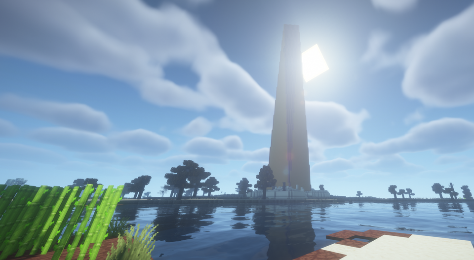
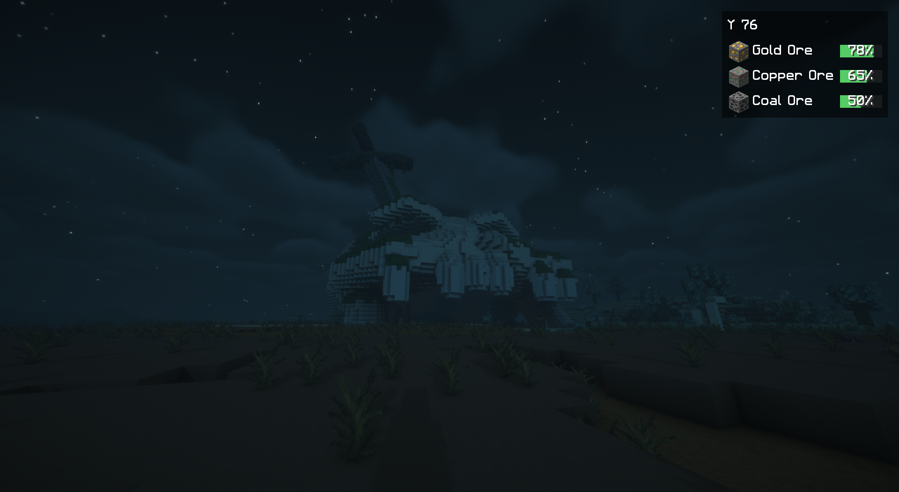

Titan Skull
01 / TITANENRESTEEin gekröntes Haupt, zurückgelassen in der offenen Landschaft. Das Gras wächst längst zwischen den Überresten.

Verlassene Kolosse, verwitterte Schädel und uralte Bauwerke warten in deiner Oberwelt. Folge ihren Spuren und entdecke, was von einer vergessenen Zeit geblieben ist.
Der große Koloss ist erst der Anfang. Zwischen Küsten, Grasland und Wäldern findest du weitere Spuren. Manche sind weithin sichtbar. Andere lohnen einen zweiten Blick.
Ein gekröntes Haupt, zurückgelassen in der offenen Landschaft. Das Gras wächst längst zwischen den Überresten.

Unter den ausladenden Ästen liegt ein Ort zum Durchatmen. Die Aura des Baums stärkt dich in seiner Nähe.

Der kleinere der beiden Kolosse im Abendlicht. Erkunde seine zugänglichen Öffnungen und halte nach brauchbaren Überbleibseln Ausschau.

Der große Koloss, von vorne gesehen. Folge einer Expeditionskarte zu diesem einzigartigen Ort deiner Welt.

Ein weithin sichtbares Zeichen. Nimm einen Pinsel mit und untersuche den verdächtigen Sand und Kies in seinem Umfeld.

Die Mauern stehen noch, doch die Natur hat ihren Platz zurückerobert. Ein weiterer Halt auf deiner Reise durch die Oberwelt.

Eine Klinge ragt aus dem verwitterten Schädel. Die nächtliche Spieltestaufnahme zeigt das zweite Schädeldesign in seiner natürlichen Umgebung.
Das Titelbild stammt aus dem früheren Spieltest vom 10. November 2026. Die Galerie zeigt Beta-3-Aufnahmen desselben Tages, darunter den Schwertschädel bei Nacht. Minecraft Java 1.21.1, TerraVista Living World und Shader tragen zu Gelände, Vegetation und Beleuchtung bei. Bilddateien und Galerie-Seitenverhältnisse bleiben unverändert; das Titelbild zeigt einen Ausschnitt des Originals. Bildnachweise ↗
Die Relikte ergänzen deine Minecraft-Welt um Orte zum Erkunden, archäologische Funde und Überreste alter Technik.

Pack Reisevorräte und einen Pinsel ein. Rund um Obelisken können archäologische Funde auf dich warten. Bürste verdächtige Blöcke, statt sie zu zerstören.
Eine geborgene Expeditionskarte kann dich zum einzigartigen großen Koloss deiner Welt führen. Orientiere dich am Kartenmarker und plane Vorräte für eine längere Reise ein.
Machine Cores lassen sich als wiederaufladbare Energiequelle für Öfen nutzen. Ein Salvage Magnet zieht nahe, erreichbare Gegenstände an. Beide nutzen sich ab und lassen sich wieder aufladen oder reparieren.
Fabric oder NeoForge, vier Minecraft-Versionen. Lade genau die Datei, die zu deiner Installation passt.
Titan Relics wird auf GitHub und auf den Mod-Plattformen bereitgestellt. Die Auswahl rechts führt direkt zum passenden GitHub-Download von Beta 3.
Eine Beta zum Ausprobieren. Beta 3 ist eine öffentliche Testversion. Am Sword Skull sind Bodenkontaktprobleme bekannt; die vollständige Survival- und Langzeitabnahme steht aus. Die neuen Menüansichten sind noch nicht abschließend visuell abgenommen. Release-Hinweise und bekannte Grenzen ↗
Auf Modrinth und CurseForge kann die Verfügbarkeit einzelner Dateien von deren Moderation abhängen. Alle acht GitHub-Spielerdateien liegen im verlinkten Beta-3-Release.
relics-1.0.0-beta.3+mc1.21.1.jar
SHA-256-Prüfsummen · Abhängigkeiten sind nicht enthalten.
Beende Minecraft. Lege Titan Relics und seine passenden Abhängigkeiten in den mods-Ordner. Für Multiplayer brauchst du sie auf dem Server und jedem Client.
Sichere vorhandene Spielstände. Erstelle eine neue Oberwelt mit aktivierter Strukturgenerierung, um die aktuelle Reliktauswahl und neue Verteilungsregeln zu erleben.
Wähle unter „Create World → World → Relic generation“ Expedition, Balanced oder Discoveries. Discoveries bietet mehr Entdeckungsmöglichkeiten. Ein Fund in der Nähe ist nicht garantiert.
Bestehende Welten behalten ihre gespeicherten Generierungsregeln, auch in unerforschten Chunks. Ein Update verschiebt keine Relikte und füllt gemeinsame Beute nicht wieder auf. Installation, Abhängigkeiten und Hinweise zu bestehenden Welten ↗
Es gibt geprüfte Kombinationen, aber keine allgemeine Modpack-, Shader- oder Leistungsgarantie. Besonders LOD- und Hintergrundgenerierung können das Ergebnis beeinflussen. Lies vor Änderungen die Kompatibilitätshinweise. Die Bilder zeigen TerraVista Living World mit Shadern und belegen keine Kompatibilität mit jedem Pack.
Relikte können weit auseinanderliegen. Die gewählten Distanzen sind keine Garantie für einen Fund. Terrain- und Biomprüfungen können die Reise verlängern. Die Verteilungsdarstellung im Menü ist eine Illustration und keine Vorschau deines Seeds.
Sichere sie zuerst und bleibe beim unterstützten Minecraft-/Loader-Ziel. Die Welt behält ihre gespeicherten Einstellungen. Neue Beta-3-Verteilungsregeln werden in alten Welten auch für unerforschte Chunks nicht nachträglich aktiviert. Downgrades und Cross-Loader-Konvertierungen sind keine unterstützten Migrationswege.
Ja. Die eigenen Projektbeiträge stehen unter der MIT-Lizenz, soweit der Autor die Rechte hält. Du benötigst keine individuelle Modpack-Freigabe. Behalte Copyright- und Lizenzhinweise bei. Fremde Werke und visuelle Referenzen behalten ihre jeweiligen Rechte. Lizenz · Credits.
Nutze das GitHub-Fehlerformular. Nenne Mod-, Minecraft- und Loader-Version sowie dein Modpack, die gewählten Einstellungen und Schritte zum Nachstellen. Bei Generierungsproblemen helfen Seed und Koordinaten. Hänge das relevante Log an und entferne private Daten vor dem Veröffentlichen.